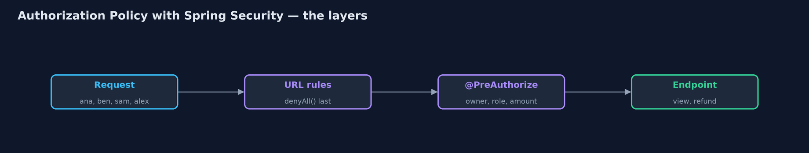
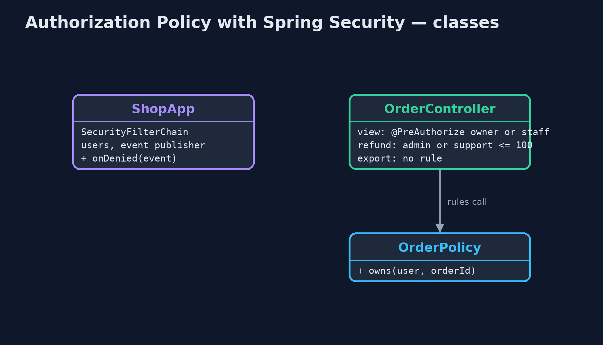
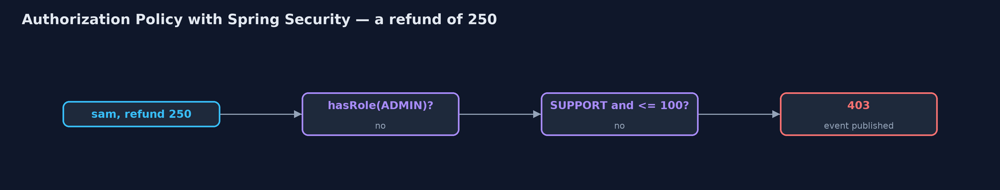
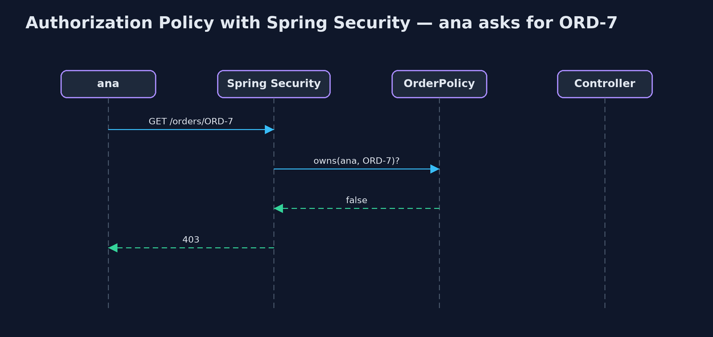

Authorization Policy with Spring Security Pattern
src/main/java/com/jk/explore/authzspring/
├── OrderController.java The shop's order endpoints, each with its access rule written beside it
├── OrderPolicy.java The part of the policy that needs the shop's own data: who owns which order
├── ShopApp.java The shop's web server with Spring Security deciding access
└── SpringAuthorizationDemo.java The five acts: a real Spring Boot server with Spring Security, called over HTTP as four usersLet Spring Security make every access decision in the shop: URL rules first, @PreAuthorize rules beside each endpoint for ownership and refund limits, denyAll() for anything nobody wrote a rule for, and an event for every refusal.
This is the framework version of the Authorization Policy pattern. The plain Java version, a separate project in this category, writes a policy class with rules and an audit log. Here Spring Security does the deciding, in a real Spring Boot web server called over HTTP by four users: two customers, a support agent and an admin.
The policy has three layers. URL rules in the security configuration decide broad access, ending with denyAll() so anything unlisted is refused. @PreAuthorize rules, written beside each endpoint in Spring's expression language, decide the details: a customer may view only their own orders, and support may refund up to 100. And a small policy bean supplies facts from the shop's data, such as who owns an order. Every refusal is published as an AuthorizationDeniedEvent.
The idea in everyday terms
Think of a hotel key-card system. The front door lets any guest in; each room door opens only for its own guest; staff cards open more doors, managers' the most. A door added to the building opens for nobody until someone programs it. And the system logs every card that was refused.
The scenario
The online store's endpoints each checked access in their own code, or forgot to. Any signed-in customer could read anyone's order by changing the order number, and support staff could refund any amount, though the rule was a limit of 100.
Run
Nothing to install beyond a Java 21 JDK: the demo starts a Spring Boot server inside the program, on a local port, and calls it over HTTP.
./gradlew runThe demo tells the story in 5 acts, each printing exact numbers that the tests check:
| Act | What it shows |
|---|---|
| 1. Signed in is enough | The old view endpoint only requires sign-in: ana views ben's order ORD-7 and gets 200. |
| 2. Roles only | hasRole(CUSTOMER) on the URL: ana still views ben's order, 200; a role cannot say "their own". |
| 3. Rules beside each endpoint | @PreAuthorize: ana on ben's order 403, ben on it 200; sam refunds 80 (200) but not 250 (403); alex refunds 250 (200). |
| 4. Deny by default | The export endpoint has no rule, so anyRequest().denyAll() refuses even alex the admin: 403. |
| 5. The bill | 3 refusals announced as AuthorizationDeniedEvents; rules are SpEL strings checked only at run time; each method rule protects only its method. |
Test
./gradlew test1 tests in DemoRunsTest. Every result the demo prints is asserted, with a real Spring Boot server on a local port, called over HTTP as four different users.
What the simulation got right, and what it left out
The plain Java version got the idea right: one policy, rules over roles and attributes, deny by default, and a reason logged for every decision. What it left out is how a framework spreads the policy sensibly: broad URL rules in one place, detailed rules beside each endpoint, and a named bean for facts only the shop knows. It also found two real traps. Refusals are only announced as events if you ask for them. And a refused request is forwarded to Spring's error page, which denyAll() refused again, so every refusal was counted twice until error dispatches were permitted.
Technologies and versions
| Technology | Version | Used for |
|---|---|---|
| Java | 21 | the code (toolchain set in build.gradle) |
| Gradle | 9.2.1 (wrapper) | build and run, nothing to install |
| JUnit | 5.10.2 | the tests |
| Spring Boot | 4.1.1 | the web server |
| Spring Security | 7 (with Boot 4.1.1) | URL rules, @PreAuthorize method security, authorization events |
| videokit | repository tool | the narrated video and animation: Piper en_US-amy-medium, speed 0.8, longer pauses (the approved amy-slow voice) |
Learning Material
| Document | What it is for |
|---|---|
| Dependencies | what the framework and infrastructure are, and why they are here |
| Problem statement | the situation and what the project must show |
| Prerequisites | what you need to know first |
| Authorization Policy with Spring Security, explained | the acts in prose |
| Session guide | a one-hour lesson with exercises |
| Animated walkthrough | the acts step by step, narrated |
| Spec | what this project must be true of |
The pattern in one picture
URL rules, then method rules, then the endpoint.

Where each piece sits
Rules where they belong.

How the data moves
The rule reads the role and the amount.

Who calls whom, in order
Refused before the controller runs.

Video
video/authorization-policy-with-spring-security-pattern-explained.mp4 (with .m4a audio and .srt subtitles) is built by video/build_video.sh. Rendered media is not committed.
What it costs
- Rules in strings. SpEL expressions are checked only when they run; a typo fails at the first request, not at build time.
- Two places to look. URL rules and method rules together make the policy; both must be read to know who may do what.
- Framework details matter. Without permitting error dispatches, every refusal was denied and counted twice.
When this is too much
A small internal tool with one kind of user needs only a sign-in. A policy pays off as soon as different users may see or change different things.
Where you have already met this
@PreAuthorizeandhasRolein Spring applications.authorizeHttpRequestsblocks inSecurityFilterChainbeans.- Policy engines such as Open Policy Agent, for rules kept outside the code.
Where this sits
This project is in security-design-patterns. It is the framework version of the plain Java Authorization Policy project in the same category, which is left unchanged.